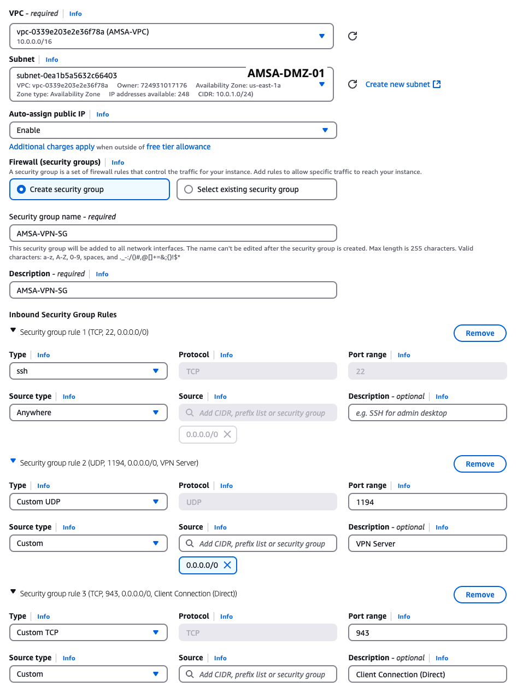

Desplegament d’una aplicació web amb alta disponibilitat amb AWS
Laboratoris Pràctics d’Administració de Sistemes i Aplicacions
En aquest laboratori intensiu, dissenyarem i implementarem una arquitectura de xarxa robusta i segura per allotjar una aplicació de WordPress. L’arquitectura es basa en la separació de capes (pública, aplicació, dades) i l’ús de Zones de Disponibilitat (AZ) per garantir que el nostre WordPress sigui altament disponible i resistent a fallades.
- Instàncies EC2 (WordPress): Distribuïdes en subxarxes privades de diferents AZs, accessibles només a través del Balancejador de Càrrega, mai directament des d’Internet.
- Base de Dades RDS (MySQL): Servei gestionat d’alta disponibilitat, també en subxarxes privades dedicades.
- DMZ: Una instància EC2 en una subxarxa pública que actuarà com a punt d’accés segur (mitjançant túnel SSH) per a la gestió de tots els recursos privats.
- Load Balancer: El punt d’entrada públic que assegura la distribució uniforme del tràfic a les instàncies de WordPress.
Diagrama de l’Arquitectura

La imatge mostra com a través d’internet, els usuaris accedeixen al Load Balancer, que distribueix el tràfic a les instàncies EC2 que allotgen WordPress. Aquestes instàncies es connecten a la base de dades RDS per gestionar el contingut de WordPress. La instància EC2 en la DMZ permet l’accés segur per a l’administració dels recursos privats.
Objectius
- Dissenyar i implementar una arquitectura de xarxa segura i altament disponible a AWS.
- Configurar VPCs, subxarxes, taules de rutes i grups de seguretat.
- Configurar una VPN segura per a l’accés administratiu.
- Configurar un load balancer per distribuir el tràfic a les instàncies EC2.
Requeriments Prèvis
- Accés al curs AWS Academy Learner Lab.
- Completar el laboratori Desplegament d’una aplicació web amb AWS per entendre els conceptes bàsics d’AWS i la configuració inicial de WordPress.
VPC i Subxarxes
El primer pas en la nostra arquitectura és definir una VPC (Virtual Private Cloud) i les subxarxes necessàries per aïllar els diferents components de l’aplicació. La VPC proporcionarà un entorn de xarxa virtualitzat on podrem desplegar els nostres recursos d’AWS. La configurarem amb la xarxa 10.0.0.0/16, la qual ens proporciona fins a 65.536 adreces IP, més que suficients per al nostre cas d’ús.
La màscara de subxarxa determina el nombre d’adreces IP disponibles dins d’una xarxa o subxarxa. Això s’expressa mitjançant la Notació CIDR (Classless Inter-Domain Routing), on el valor (/n) indica la quantitat de bits reservats per a la part de Xarxa. Una màscara de subxarxa de /16 significa que els primers 16 bits de l’adreça IP estan reservats per a la identificació de la xarxa, deixant els altres 16 bits per a la identificació dels hosts. Això permet tenir fins a 65.536 adreces IP (\(2^{32-16}\)) dins d’aquesta xarxa.
Quan feu el Subnetting per crear subxarxes dins de la vostra VPC, esteu augmentant el valor CIDR (per exemple, de /16 a /24), per tal de reduir la mida de les subxarxes i aïllar millor el tràfic. Per exemple, una subxarxa amb CIDR /24 té 256 adreces IP (\(2^{32-24}\)).
Recordeu que el total d’adreces calculat no és el total d’adreces útils per als vostres servidors (hosts). Algunes adreces es reserven per a usos especials, com identificar la xarxa i la difusió (broadcast).
Podem definir la VPC a través de la interfície web d’AWS, utilitzant els formularis disponibles:

Creació de les subxarxes
A continuació, afegirem les subxarxes necessàries per a la nostra arquitectura. Aneu a VPC → Subnets → Create subnet. Seleccioneu la VPC que acabem de crear i afegiu les subxarxes següents:
- AMSA-DMZ-01: Subxarxa pública a la zona us-east-1a. Aquesta subxarxa allotjarà la instància EC2 que farà de pont segur d’accés (mitjançant túnel SSH) per a la gestió de tots els recursos privats. (10.0.1.0/24).

- AMSA-DMZ-02: Subxarxa pública a la zona us-east-1b. Aquesta subxarxa allotjarà la instància EC2 que farà de pont segur d’accés (mitjançant túnel SSH) per a la gestió de tots els recursos privats. (10.0.2.0/24).

- AMSA-Private01: Subxarxa privada per a les instàncies de WordPress a la zona de disponibilitat us-east-1a. (10.0.3.0/24).

- AMSA-Private02: Subxarxa privada per a les instàncies de WordPress a la zona de disponibilitat us-east-1b. (10.0.4.0/24)

- AMSA-Data: Subxarxa privada per a dades a la zona de disponibilitat us-east-1c. (10.0.5.0/24)

Taules d’Enrutament i Associacions
Per gestionar les rutes del tràfic i determinar com es distribueix entre les subxarxes, crearem taules de rutes i les associem a les subxarxes corresponents.
Configuració del Gateway d’Internet
Utilitzarem un Gateway d’Internet (IGW) per permetre que les subxarxes públiques (AMSA-DMZ-01 i AMSA-DMZ-02) tinguin accés a Internet tant per a tràfic entrant com sortint. Per fer-ho, primer crearem el IGW i després l’associarem a la nostra VPC.
El primer pas és crear el Gateway d’Internet. Aneu a VPC → Internet Gateways → Create internet gateway. Un cop creat, l’anomeneu AMSA-IG.

El segon pas és associar el Gateway d’Internet amb la VPC. Seleccioneu el Gateway d’Internet que acabem de crear i feu clic a Actions → Attach to VPC. Seleccioneu la VPC AMSA-VPC i feu clic a Attach internet gateway.


Assegureu-vos que el Gateway d’Internet estigui correctament associat a la VPC. Si no està associat, les subxarxes públiques no podran accedir a Internet.
Creació de les taules de rutes
Cada subxarxa necessita una taula de rutes per definir com es dirigeix el tràfic sortint i entrant. Crearem taules de rutes específiques per a cada tipus de subxarxa (pública i privada) i les associem a les subxarxes corresponents.
Enrutament per a les subxarxes públiques (DMZ)
El primer pas és crear la taula de rutes per a les subxarxes públiques. Aneu a VPC → Route Tables → Create route table. Seleccioneu la VPC AMSA-VPC i anomeneu la taula de rutes AMSA-DMZ01-RT.

El segon pas és associar la taula de rutes (AMSA-DMZ01-RT) amb la subxarxa AMSA-DMZ-01 i permetre el tràfic de sortida a Internet a través del Gateway d’Internet que hem creat anteriorment.

El tercer pas és permetre el tràfic de sortida a Internet a través del Gateway d’Internet que hem creat anteriorment. Per fer-ho aneu a la secció Routes i clicareu a Edit routes. A continuació, Add route i editareu (Destination: 0.0.0.0/0; Target:Seleccionar el AMSA-IG).

Realitzeu els mateixos passos per a la subxarxa AMSA-DMZ-02, modificant només el nom de la taula de rutes i l’associació amb la subxarxa.
Enrutament per a les subxarxes privades
Les subxarxes privades no tenen accés directe a Internet per motius de seguretat. Per tant, necessitem configurar les taules de rutes per a aquestes subxarxes de manera que puguin accedir a Internet a través d’un NAT Gateway (Network Address Translation Gateway). Això permetrà que les instàncies dins de les subxarxes privades puguin iniciar connexions cap a l’exterior, però impedirà que l’exterior iniciï connexions cap a elles.
Un NAT Gateway és un servei gestionat per AWS que permet a les instàncies en una subxarxa privada accedir a Internet per a actualitzacions de programari, descàrregues de paquets, etc., sense exposar aquestes instàncies directament a Internet. El NAT Gateway tradueix les adreces IP privades de les instàncies a una adreça IP pública quan aquestes instàncies fan peticions a Internet.
Per crear el NAT Gateway, necessitem una IP elàstica (Elastic IP). Per tant, primer crearem una IP elàstica i després la utilitzarem per crear el NAT Gateway. L’anomeneu AMSA-NAT-EIP.


Un cop tenim la IP elàstica, podem crear el NAT Gateway. L’anomeneu AMSA-NG i l’associeu a la subxarxa AMSA-DMZ-01.

Crearem la taula de rutes (AMSA-Private01-RT) per a la subxarxa AMSA-Private01 i l’associarem a la subxarxa. Aquesta taula de rutes permetrà que les instàncies dins d’aquesta subxarxa accedeixin a Internet a través del NAT Gateway.

El segon pas és associar la taula de rutes (AMSA-Private01-RT) amb la subxarxa AMSA-Private01 i permetre el tràfic de sortida a Internet a través del NAT Gateway que hem creat anteriorment.

El tercer pas és permetre el tràfic de sortida a Internet a través del NAT Gateway que hem creat anteriorment. Per fer-ho aneu a la secció Routes i clicareu a Edit routes. A continuació, Add route i editareu (Destination: 0.0.0.0/0; Target:Seleccionar el AMSA-NG).
Repetiu els mateixos passos per a la subxarxa AMSA-Private02, modificant només el nom de la taula de rutes i l’associació amb la subxarxa.
Enrutament per a la subxarxa de dades (AMSA-Data)
La subxarxa AMSA-Data no allotjarà instàncies que necessitin accés a Internet. Per tant, no necessitem configurar cap ruta per a aquesta subxarxa. Crearem una taula de rutes buida i l’associarem a la subxarxa AMSA-Data. Aquesta xarxa serà completament aïllada i només permetrà la comunicació interna dins de la VPC.
Grups de Seguretat
Els grups de seguretat (Security Groups) són una eina per controlar el tràfic de xarxa de les instàncies i altres recursos d’AWS, actuant com un tallafocs virtual. Permeten definir regles que especifiquen quines connexions estan permeses tant d’entrada (inbound) com de sortida (outbound).
- Trafic inbound: Permet decidir quins tipus de connexions entrants (cap al recurs) són permeses.
- Trafic outbound: Controla quines connexions sortints (des del recurs cap a altres destinacions) estan autoritzades.
Grup de Seguretat per a les instàncies EC2
- Connexions entrants (inbound) per als serveis web HTTP (port 80) i HTTPS (port 443), accessibles des de qualsevol origen.
- Connexions SSH (port 22) per a administració remota, també accessibles des de qualsevol origen (inicialment, però més endavant es restringiran).
- Totes les connexions sortints (outbound), que per defecte estan permeses a AWS, cosa que permet a les instàncies EC2 comunicar-se amb altres recursos com ara RDS.
Per fer-ho, navegarem a la consola de VPC d’AWS, seleccionarem la secció Security Groups i clicarem a Create security group. A continuació, omplirem els camps amb la informació necessària i clicarem a Create security group. El podeu anomenar AMSA-WP-SG.

En aquest moment, estem permetent tot el tràfic de xarxa per als serveis web i SSH. Quan ho tinguem tot configurat, restringirem aquest accés únicament al trafic entrant provinent del balancejador de càrrega pels serveis web i a la nostra xarxa interna per a SSH.
Grup de Seguretat per a la base de dades RDS
- Connexions inbound: Només permetrà tràfic al port 3306 (MySQL) i exclusivament des de les instàncies EC2 que pertanyin al grup de seguretat AMSA-WP-SG.
- Connexions outbound: Per defecte, AWS permetrà totes les connexions sortints, cosa que garanteix que la base de dades pugui comunicar-se amb altres recursos si és necessari.
Per fer-ho, navegarem a la consola de VPC d’AWS, seleccionarem la secció Security Groups i clicarem a Create security group. A continuació, omplirem els camps amb la informació necessària i clicarem a Create security group.

Resum
| Grup de Seguretat | Inbound | Outbound |
|---|---|---|
| AMSA-WP-SG | HTTP (80) i HTTPS (443) des de 0.0.0.0/0; SSH (22) des de 0.0.0.0/0 | Totes permeses |
| AMSA-DB-SG | MySQL (3306) des de AMSA-Web-SG | Totes permeses |
Creació de la Base de Dades RDS
La base de dades ja la vam configurar en el laboratori anterior Desplegament d’una aplicació web amb AWS. La única diferència és que ara la base de dades es troba en una subxarxa privada i només és accessible des de les instàncies EC2 que pertanyen al grup de seguretat AMSA-Web-SG.
- Compute resources: Don’t connect to an EC2 compute resource
- VPC: AMSA-VPC
- Subnet Group: Create new DB Subnet Group
- Public accessibility: No
- VPC security group: AMSA-DB-SG
- Availability Zone: us-east-1d
Creació de les instàncies EC2
Les instàncies EC2 que allotjaran WordPress es desplegaran en les subxarxes privades, recordeu que vam configurar ansible en el laboratori anterior Desplegament d’una aplicació web amb AWS. AWS ens permet crear plantilles d’instàncies (Launch Templates) que faciliten la creació d’instàncies amb una configuració predefinida. Per tant, crearem una plantilla d’instància que inclogui la configuració necessària per a les nostres instàncies EC2 de WordPress, enlloc d’utiltizar el mètode amb ansible que vam utilitzar en el laboratori anterior.
Configuració del Servidor Web amb WordPress
Creareu una instancia EC2 amb Amazon Linux, seleccionant la VPC AMSA-VPC i la subxarxa AMSA-DMZ-01. Assegureu-vos que l’instància utilitzi el grup de seguretat AMSA-WP-SG. La podeu anomenar AMSA-DB-Config. Seleccionar assignar ip pública. Aquesta instància només la farem servir per inicialitzar la base de dades i després la podrem eliminar.
Un cop configurada la instància, connecteu-vos-hi mitjançant SSH utilitzant la clau privada corresponent a la clau pública que vau associar a la instància durant la seva creació. I realitzeu la configuració de la base de dades MySQL per a WordPress.
Anem a crear una plantilla de llançament (Launch Template) per a les instàncies EC2 que allotjaran WordPress. Aquesta plantilla inclourà la configuració necessària per a les instàncies, incloent-hi el script d’instal·lació i configuració de WordPress.
- Nom de la plantilla: AMSA-WP-Template
- AMI: Amazon Linux 2023 (64-bit x86)
- Instància Type: t2.micro
- Key Pair: AMSA-KEY
- Subxarxa: No seleccionar cap subxarxa (es seleccionarà dinàmicament)
- Grup de Seguretat: AMSA-WP-SG
- Advanced Details: Afegiu el següent script a la secció de UserData.
Modifiqueu les dades de connexió a la base de dades segons les vostres dades.
#!/bin/bash
# sudo bash install_wp.sh
# Ajusteu les dades següents segons les vostres dades
DB_NAME=""
DB_USER=""
DB_USER_PASSWORD=""
DB_HOST=""
if [ "$(id -u)" -ne 0 ]; then
echo "Please run this script with sudo or as root."
exit 1
fi
dnf install -y wget php-mysqlnd httpd php-fpm php-mysqli php-json php php-devel php-gd expect
cd /tmp
wget https://wordpress.org/latest.tar.gz
tar -xzf latest.tar.gz
# Configure WordPress
cp wordpress/wp-config-sample.php wordpress/wp-config.php
sed -i "s/database_name_here/$DB_NAME/g" wordpress/wp-config.php
sed -i "s/username_here/$DB_USER/g" wordpress/wp-config.php
sed -i "s/password_here/$DB_USER_PASSWORD/g" wordpress/wp-config.php
sed -i "s/localhost/$DB_HOST/g" wordpress/wp-config.php
sudo cp -r wordpress/* /var/www/html/
sudo sed -i 's/AllowOverride None/AllowOverride All/g' /etc/httpd/conf/httpd.conf
sudo chown -R apache:apache /var/www
sudo chmod 2775 /var/www
sudo systemctl restart httpdUn cop creada la plantilla de llançament, podeu utilitzar-la per crear instàncies EC2 amb WordPress ja configurat i preparades per connectar amb la vostra base de dades RDS. Aneu a EC2 i seleccioneu Launch Instance. A continuació, seleccioneu la plantilla de llançament AMSA-WP-Template i configureu la resta de paràmetres segons les vostres necessitats.
- Nombre d’instàncies: 2
- Subxarxa: Seleccioneu la subxarxa AMSA-Private01 per a la primera instància i AMSA-Private02 per a la segona instància. Les podeu anomenar AMSA-WP-01 i AMSA-WP-02 respectivament.
Aquestes instàncies no tindran IP pública, ja que només seran accessibles a través del balancejador de càrrega que configurarem més endavant. Ara mateix no podreu accedir-hi directament ni per SSH ni per HTTP.
Configuració del Balancejador de Càrrega
En aquest punt, crearem un balancejador de càrrega per a les nostres instàncies EC2. Aquest balancejador de càrrega serà responsable de distribuir uniformement el tràfic entre les instàncies EC2 que allotgen WordPress.
Existeixen 3 tipus de balancejadors de càrrega a AWS: Application Load Balancer (ALB), Network Load Balancer (NLB) i Gateway Load Balancer (GWLB). En aquest cas, utilitzarem un Application Load Balancer (ALB), ja que és el recomanat per a aplicacions web que utiltizen HTTP i HTTPS.
Navegueu a la consola de AWS i seleccioneu el servei EC2. A la barra lateral, seleccioneu Load Balancers i després Create Load Balancer. Seleccioneu Application Load Balancer i feu clic a Create.
- Nom del balancejador de càrrega: AMSA-ALB
- Scheme: Internet-facing
- IP Address Type: IPv4

VPC: AMSA-VPC
Availability Zones: Seleccionar les zones de disponibilitat on tenim la subxarxa pública AMSA-DMZ-01 (us-east-1a) i les AMSA-DMZ-02 (us-east-1b).
Grups de Seguretat: Nou grup de seguretat (AMSA-ALB-SG), aquest grup de seguretat permetrà el tràfic d’entrada per als ports 80 (HTTP) i 443 (HTTPS) des de qualsevol origen però restringirà el tràfic de sortida a les instàncies EC2 (grup de seguretat AMSA-WP-SG).

Grup de Seguretat per al balancejador de càrrega 
Configuració del balancejador de càrrega Listeners: Crearem un listener per al port 80 (HTTP), que redirigirà el tràfic al port 80 de les instàncies EC2. Al port 443 (HTTPS) de moment no configurarem cap redirecció. Per fer-ho, primer haureu de crear un Target Group. Aquest grup es necessari per indicar al balancejador de càrrega on enviar el tràfic.
- Target Group:
- Target Type: Instances
- Nom: AMSA-WP-TG
- Protocol: HTTP
- Port: 80
- VPC: AMSA-VPC
- Health checks: HTTP, ruta /

Configuració del target group
- Target Group:
El balancejador de càrrega comprova la salut de les instàncies EC2 a través del port 80 i la ruta /. Això significa que el balancejador de càrrega enviarà tràfic a les instàncies EC2 que responguin correctament a les peticions HTTP a la ruta /. Com que les nostres instàncies EC2 tenen WordPress instal·lat, aquestes instàncies respondran correctament a les peticions HTTP a la ruta /. Podem deixar la configuració per defecte. La instal·lació de WordPress inclou una pàgina d’inici que respondrà amb 302 (Found) quan s’accedeixi a la ruta arrel (/), per això pot passar que el health check mostri que la instància no està saludable. Un cop configurat el WordPress, el health check mostrarà que la instància està saludable.
Seleccionarem les dos instàncies EC2 que allotgen WordPress (AMSA-WP-01 i AMSA-WP-02) i les afegirem al target group. Utilitzant el botó Include as pending below i després Add to registered.

Configuració del target group Un cop creat el target group, el seleccionarem com a target del listener del balancejador de càrrega.

Configuració del balancejador de càrrega Un cop creat el balancejador de càrrega, heu d’esperar uns minuts fins que el seu estat passi de Provisioning a Active. Un cop l’estat sigui Active, podeu accedir al balancejador de càrrega a través de la seva adreça DNS.

- Ara ja podem accedir al balancejador de càrrega a través de la seva adreça DNS i veure la pàgina d’instal·lació de WordPress:

Procedirem a instal·lar WordPress a través del balancejador de càrrega. Seguiu els passos de la instal·lació i configureu l’usuari administrador i la contrasenya. Ara ja teniu el servidor web configurat amb WordPress i el balancejador de càrrega per distribuir el tràfic entre les instàncies EC2.
Configuració VPN
EC2 per desplegar el servidor VPN
Per desplegar el servidor VPN, crearem una nova instància EC2 que actuarà com a servidor VPN. Aquesta instància EC2 haurà d’estar en una subxarxa pública connectada a interent. Anomenarem aquesta instància AMSA-VPN i la situarem a la subxarxa pública AMSA-DMZ-01. Aquesta instància EC2 utilitzarà el grup de seguretat AMSA-VPN-SG que permetrà el tràfic necessari per al funcionament del servidor VPN.
Navegueu a la consola de AWS i seleccioneu el servei EC2. A la barra lateral, seleccioneu Instances i després Launch Instances.
Seleccioneu la imatge Ubuntu Server 22.04 LTS.
Seleccioneu la instància t2.micro.
Configureu la instància:
- Network: AMSA-VPC
- Subnet: AMSA-DMZ-01
- Auto-assign Public IP: Enable

Configuració de la instància EC2 per al servidor VPN Configureu el grup de seguretat: AMSA-VPN-SG.
Si reviseu la documentació d’instal·lació del servidor OpenVPN: OpenVPN Access Server System Administrator Guide. Veure que necessitem els següents ports oberts: TCP 943, UDP 1194.

Configuració del grup de seguretat per al servidor VPN Connecteu-vos a la instància EC2 a través de la consola online de AWS o amb una connexió SSH i executeu la següent comanda per instal·lar el servidor OpenVPN:
sudo apt update -y sudo apt install ca-certificates gnupg wget net-tools -y sudo wget https://as-repository.openvpn.net/as-repo-public.asc -qO /etc/apt/trusted.gpg.d/as-repo-public.asc sudo echo "deb [arch=amd64 signed-by=/etc/apt/trusted.gpg.d/as-repo-public.asc] http://as-repository.openvpn.net/as/debian jammy main" | sudo tee /etc/apt/sources.list.d/openvpn-as-repo.list sudo apt update && sudo apt install openvpn-as -y
Instal·lació del servidor OpenVPN Amb aquestes credencials, podreu accedir a la interfície web del servidor OpenVPN a través del vostre navegador web. Navegueu a la IP pública de la instància EC2 (en el meu cas https://44.199.196.242:943/admin), com no tenim el certificat SSL configurat, ens sortirà un missatge d’advertència, ignoreu-lo i continueu. Inicieu sessió amb les credencials que heu configurat anteriorment.
Nota: Si heu perdut les credencials de l’usuari
openvpn, les podeu recuperar consultat el fitxer de logs del servidor OpenVPN. Per exemple, podeu consultar el fitxer de logs amb la següent comanda:sudo less /usr/local/openvpn_as/init.log
Interfície web del servidor OpenVPN - Accepteu els termes de llicència.

Acceptació dels termes de llicència Aneu a VPN Server/Network Settings i configureu el Hostname or IP Address amb la IP pública de la instància EC2 on teniu el servidor OpenVPN. Un cop fet, clicareu a Save.

Configuració de la IP pública del servidor VPN Aneu a Access Controls/Internet Access and DNS i seleccioneu l’opció Split Tunnel per evitar que tot el tràfic del client sigui redirigit a través de la VPN. Únicament el tràfic dirigit a les subxarxes de la VPC serà redirigit a través de la VPN.

Configuració de Split Tunnel Aneu a Access Controls/Global Access Rules i afegiu una regla per permetre el tràfic de la VPN a les subxarxes de la VPC:

Configuració de les regles d’accés global Aneu a User i creu-vos un usuari i una contrasenya per connectar-vos al servidor VPN.

Creació d’un usuari per al servidor VPN Un cop tinguem el fitxer de configuració, ja podeu fer un Restart del servei OpenVPN per aplicar tots els canvis. Torneu a accedir a la interfície web del servidor OpenVPN.
Aneu a User/user/Connection Profiles i creeu un perfil de connexió per defecte. Un cop creat us baixarà un fitxer de configuració que després utilitzarem per connectar-nos al servidor VPN.

Descàrrega del fitxer de configuració del client VPN Installeu l’aplicació OpenVPN Connect al vostre ordinador. Aquesta aplicació és el client VPN que utilitzarem per connectar-nos al servidor VPN.
Un cop instal·lat, obriu l’aplicació i importeu el fitxer de configuració que heu descarregat anteriorment.
Un cop tot configurat, actualitzarem el grup de seguretat de les instàncies EC2 per permetre el tràfic al port 22 únicament provinent del servidor VPN. Això significa que les instàncies EC2 només acceptaran tràfic SSH del servidor VPN i no de qualsevol altre origen.

Configuració tràfic SSH a Ec2 del servidor VPN
En aquest punt, ja no podreu accedir a les instàncies EC2 on teniu el servei de WordPress a través de SSH, ja que el tràfic SSH només es permet des del servidor VPN. Per accedir a les instàncies EC2, primer heu de connectar-vos al servidor VPN i després connectar-vos a les instàncies EC2. Per fer-ho:
Importeu el fitxer de configuració del client OpenVPN Connect a l’aplicació i connecteu-vos al servidor VPN.

Connexió al servidor VPN TroubleShooting: Si en el fitxer de configuració veieu (Server Hostname) una ip del rang 10.0.X.X, això vol dir que la VPN no s’ha configurat correctament. Assegureu-vos de reiniciar el servidor i tornar a descarregar el fitxer de configuració del client, ha de tenir la ip pública del servidor VPN.
Utilitzeu la mateixa contrasenya del usuari
openvpnper connectar-vos al servidor VPN.
Connexió al servidor VPN Si tot ha anat bé, veureu que esteu connectats al servidor VPN.

Connexió al servidor VPN
Finalment, connecteu-vos a les instàncies EC2:

Consideracions importants: El servidor VPN ens permet accedir a les instàncies EC2 a través de SSH, però a partir de l’adreça interna (10.0.X.X) de la instància EC2. No podrem accedir a les instàncies EC2 a través de la seva adreça pública ja que hem configurat la VPN per accedir a les subxarxes de la VPC.
Neteja els recursos creats
Un cop finalitzat podeu eliminar totes les instàncies EC2 i la base de dades RDS per evitar càrrecs innecessaris al vostre compte d’AWS.
Exercics Adicionals
- Com milloraríeu els grups de seguretat, quins canvis faríeu?
- Què caldria fer per connectar un client MySQL des de casa a la base de dades RDS? Expliqueu els passos.
- Prepara un script que faci una prova de càrrega al balancejador de càrrega i mostri com es distribueix el tràfic entre les instàncies EC2.
- Genera un infra_v3.yaml que contingui tota la infraestructura com a codi.
Recursos Addicionals
- infra_v1.yaml: Aquest fitxer conté la infraestructura com a codi per crear tots els recursos d’AWS utilitzant AWS CloudFormation fins a la creació de templates de llançament.
- infra_v2.yaml: Aquest fitxer conté la infraestructura com a codi per crear tots els recursos d’AWS utilitzant AWS CloudFormation sense el load balancer ni les instancies EC2 corresponents als WordPress.